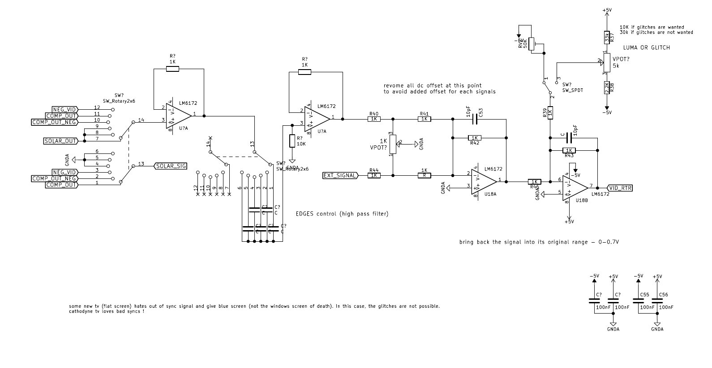

PAL/NTSC VIDEO MANGLER ( update : april 2019 )
page in progress
{kind=link}
{kind=link}
possible front panel made of CNC made wood panels.
{kind=link}
{kind=link}
the PAL/NTSC VIDEO MANGLER is a fully analog PAL/NTSC video processor which have different mode of operation and different transformations applied to the inputed video
POWER SUPPLY
the only issue is to generate a -5V rail without a transformer and be able to power the circuit with a simple AC/DC external power source. I used a LT1054 capable of delivering about 100mA.
VIDEO SPLIT
The key is to strip the incomming signal into two parts: the video to be processed and the sync imformation left untouched. This will allow the modification of the video signal whereas the sync remains clean. The signals are combined at the output in the same manner. This is done with a video multiplexer (NX5DV330) a LM1881 sync stripper and a bit of logic (design from the synkie project). Note that using a CD4053 also work but degrade the image (we're talking about 4Mhz signal here (subcarrier)).
The video should also be dc restored to be stable (EL4089)
{kind=link}

the in/out and combianator circuit

the original video can be restored with a bypass switch that connect 5V to the control pin of the multiplexer (PIN1) as showned in the schematic (P6).
{kind=link}
{kind=link}
the colorburst is not sent to the video processor circuit but added to the sync signal for proper color display. (it could also be removed, black and white image or inverted)
THE OUTPUT
{kind=link}
the video after being highpass filtered (or not) can be blend with the VCO signal. The second op-amp sets the bias for the signal to be above the sync pulse voltage. IN the manual mode, we can increase or decrease the luminance (below the sync pulse, the TV loses synchronisation and creates glitches and image tearings).